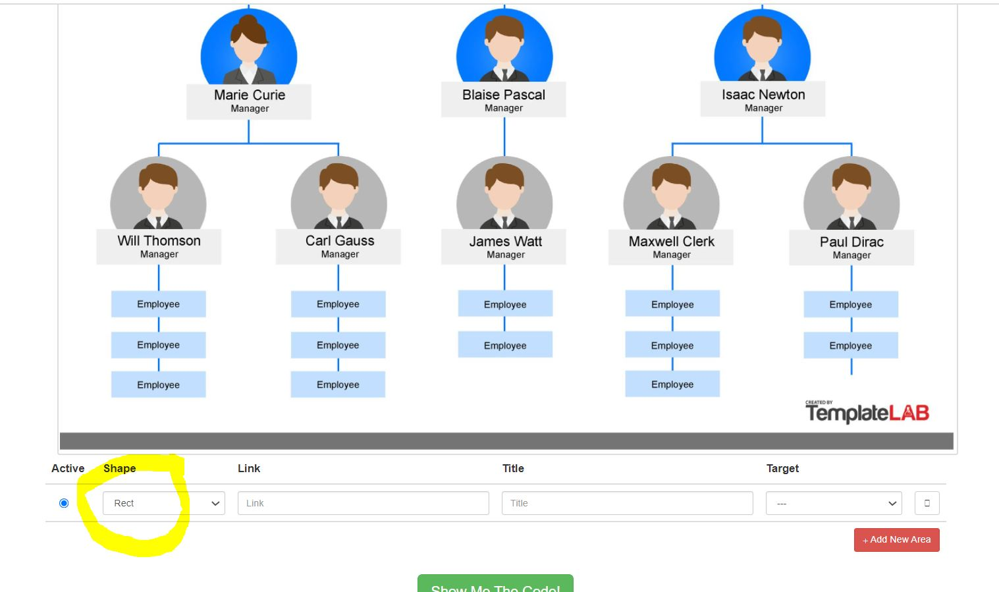

Image map Power BI Custom Visual
First step download the visual from here and import it in the Power BI Desktop
Now we have to draw the image map using this website select the image from local folder Start by drawing Objects as Circles, rectangles, and se the properties as link and title  mark all areas in picture that need to be used in Power BI After completing the sections click show me code will download two csv files and will show the result inside the popup. open the two file in notepad and edit the image url to be hosted as https://... Files will be used later inside power bi desktop
Import and bind the CSV files with image inside PowerBI desktop
Rename the column as (ImageId, url, Html,Value)
Join the two dataTable on image ID
Drag and Drop the columns
Visual will load the image and area, you can try the tooltip and add table to test the selection both ways
Click here to download the sample .pbix file with more test scenarios